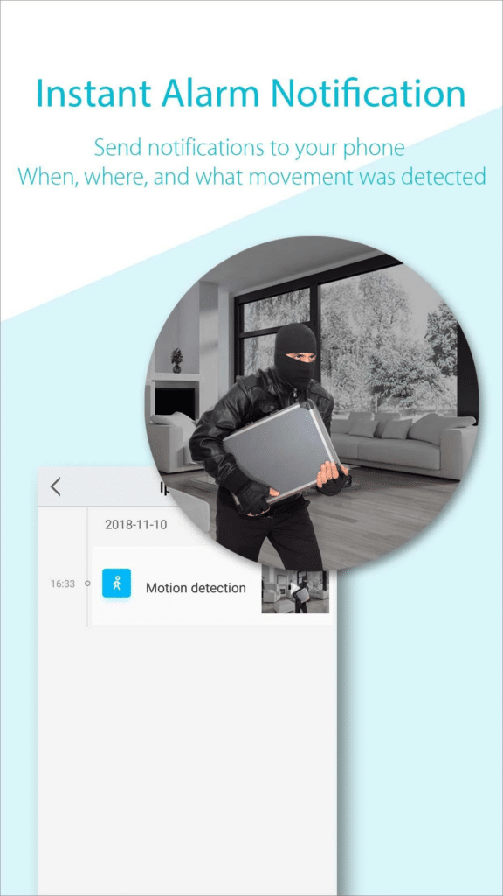
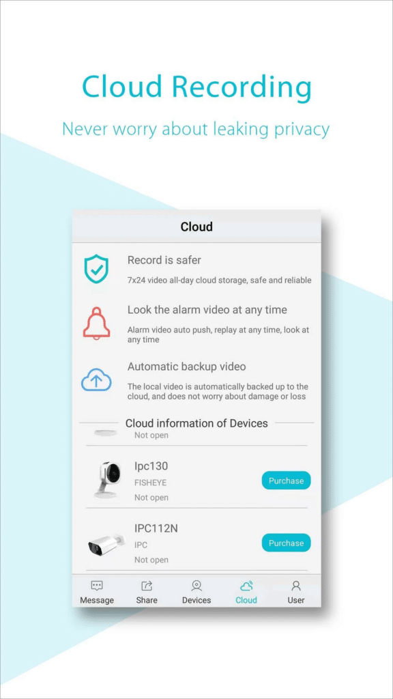

用 AView 大半年，这些坑我一个没躲过
AView 看着就是个看视频的 App，配上网卡就能用，但账号跨区、TF 卡规格、分享权限这些细节踩坑后才发现，远不止装个 App 那么简单。
去年装了两台捷高的 IPC 相机，配的就是 aview官网 这套配套生态。一开始觉得这东西能有什么难的，下完 App 扫码配对完事。结果大半年下来，小坑踩了不少，有的还差点把家人给绕进来。写下来给同好提个醒。
账号跨服务器不匹配，相机列表直接空一半
第一次买相机是在国内，用手机号注册了账号。后来帮朋友代买了一台同型号的海外版，想在我自己的 App 里添进去看看画面——结果扫完码相机是添上了，但列表里时不时冒出一个服务器不匹配的小图标，点开还会提示"当前账号服务器与相机注册区域不一致"。
症状就是：App 里能看到那台相机的缩略图，但点进去实时画面加载半天转圈，偶尔能出画面，点回放直接报超时。一开始我以为是网络问题，换了 Wi-Fi 换了 4G 都没解决，甚至去路由器里做了端口映射，没用。
后来翻了 aview文档 才搞明白，AView 把全球分成了几个服务器区域，账号注册时会根据手机号或邮箱自动归到对应区。国内手机号默认国内服务器，海外邮箱默认海外服务器。我国内号添了台在海外区注册的相机，等于一个账号同时跨了两个区，App 在做视频流转发的时候就卡在区域间的路由上了。
解法其实很简单，不用重置相机。点那个服务器不匹配的图标，App 会弹出一个"重新登录同步"的按钮，走一遍登录流程，账号就会自动把自己切换到相机所在的服务器区域。切换完两台相机同时在线，画面秒出。
但这里有个容易忽略的副作用：如果你一个账号下面同时管着国内区和海外区的多台相机，跨区登录同步之后，之前那几个区的相机会暂时消失一阵子，得等 App 后台把所有相机重新索引完才会全部出现。这个等待时间少则几十秒，多则三五分钟，别慌着重新配对。

TF 卡录不进去花屏，多半是卡的问题不是相机
第二台相机到手的时候，我随手从抽屉里摸了张旧 TF 卡插进去——那是之前手机淘汰下来的，写速度只有 4MB/s 左右。相机通电一切正常，画面也有，但过了一周想翻前几天的录像，回放列表里全是半截半截的文件，有的点开直接黑屏，有的只出声音不出画面。
症状很典型：实时预览没问题，告警推送也正常，就是本地录像文件不完整或者完全没有。我一度怀疑是相机固件有 bug，还跑去下载下了最新版固件刷了一遍，花了二十分钟，结果刷完还是一样。
后来查到一条很关键的注意事项——插 TF 卡必须断电操作。我当时是相机通着电热插拔的，虽然那次没立刻烧卡，但高速读写中突然拔插很容易在卡上留下坏块。再加上那张旧卡本身速度就不够，1080p 高清模式下每秒写入大概要 1MB，Class 4 的卡理论上能跟上，但实际场景里偶发的写入波动就会导致录像文件截断。
重新格式化那张卡（相机端格式化，不是电脑上格），插回去好了。但用了一个月又出问题，这次直接是整张卡读不出来了。换了张 Class 10 新卡，到现在三个月没再出过录像截断的事。
推荐速度就是 Class 10 起步，容量按分辨率来算：32GB 卡 1080p 模式大概能录八天，64GB 翻倍。真拿不准就去查一下你的相机型号对应的最大支持容量，有的老款 4K 相机对卡的 UHS 等级还有要求，卡选错了直接不识别。
分享相机给家人，别直接把账号密码给出去
一开始为了省事，直接把我的 AView 账号密码给了我妈，让她在她手机上登。结果第二天她给我发消息说"登不上"，我这边一看——我自己也掉了。一个账号多地同时登录，AView 会把前一个会话踢下线，谁后登录谁在线。这还不算安全隐患，账号密码一旦泄露，相机的解绑、固件升级、告警设置全没了。
正确做法是用分享功能。相机更多菜单里有"分享给好友"的选项，选"分享到 AView 用户"，输入对方的账号邮箱就行——注意对方得先自己注册过 AView，而且账号所在的服务器区域要跟你一致，不然邀请发过去对方收不到。
分享出去的相机默认只读权限：能看实时画面、能看回放、能收告警推送，但不能解绑、不能改告警规则、不能升级固件。我后来帮我妈注册了自己的账号，分享完她那边消息中心收到邀请，点接受相机就出现在列表里了，我这边的相机管理一点不受影响。
还有个小细节：一台相机能分享给几个人，文档里没写死上限，随版本变化。家庭场景三四个人足够，但商业场景如果要十几个同事同时看，还是老实上专业的多路视频监控系统吧。
巡航点只能设三个，多一个都不行
店里的相机我想让它自动巡检门口、货架、收银台、后门四个位置。结果在全景导航图上点完三个巡航点，界面上"添加巡航点"的按钮直接灰了——最多三个，不能再多。
一开始没细看说明，以为是 bug，后来翻巡航时段那部分的文档才看到，明确写了"最多 3 个巡航点"。这是硬件限制还是软件策略我没深究，但实际用下来三个点覆盖一个小店的主要区域也差不多了，真要四个区域，建议直接加一台相机，成本比折腾巡航低多了。
每个巡航点可以单独设置巡航时段和停留时长，比如门口那个点设成 18:00 到次日 06:00 巡航、停留 5 秒，货架区只在 22:00 之后巡航。巡航过程中移动侦测照常工作，不影响告警推送的准确性，这点我特意测试过，放心。

防坑清单
写完这些回头看，其实大部分坑都是没注意文档里那些加粗的小字：
- 跨区相机不要硬塞同一个账号，点服务器不匹配图标先同步
- TF 卡必须断电插拔，至少 Class 10 速度，相机端格式化
- 家人共享一定用内置的分享功能，别给密码
- 巡航点最多三个，多了直接加相机
- 注册收不到验证码先查垃圾邮件，海外账号换 Gmail 试试
防坑清单里这些条目，我也整理进了那份公开的中文文档目录里，GitHub、Gitee、GitCode 三个仓库都能直接找到对应文件，顺手补个星也好。
知道这些坑之后，AView 其实相当省心，一年多下来相机没出过硬件问题，App 也没崩过。